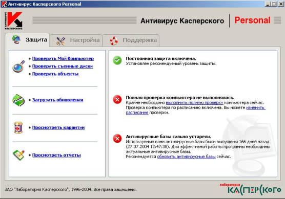
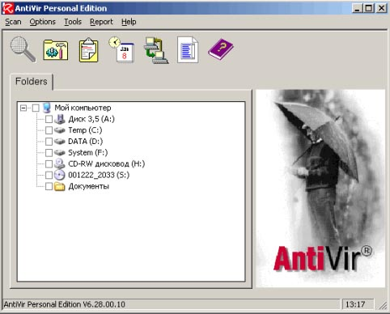
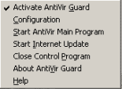
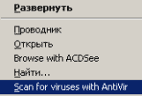
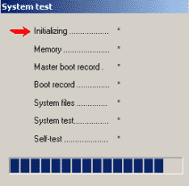
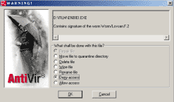

В наше время, когда в сети ежедневно появляются десятки новых вирусов и червей, каждый компьютер должен иметь какие-то средства защиты от них, т.е. антивирус. Но какой выбрать? Об этом мы сегодня и поговорим. Перед началом написания статьи я специально скачал из Интернета знаменитого червя msblast для тестирования антивирусов, описанных далее.
Официальный сайт: http://www.kaspersky.ru/

Это один из самых популярных отечественных антивирусных продуктов. Программа имеет достаточно широкие возможности для того, чтобы обезопасить ваш компьютер от вирусов. Более старые версии этого антивируса отличались тем, что очень сильно тормозили компьютер пользователя(по этому поводу даже анекдоты сочиняли), но эта версия не так сильно загружает память. Программа может проверить отдельный файл/папку (для этого она добавляет свой пункт в контекстное меню Проводника), отдельные диски, весь компьютер или съемный носитель. Антивирусную базу, которая обновляется на сайте производителя довольно часто, можно обновить прямо из программы (ровно в 18.00 сервер практически зависает, сотни тысяч юзеров, обновляют базы, поэтому желательно время изменить немного). Как известно, любой антивирус имеет ограниченное количество уровней сканирования вложенных архивов. Программа без проблем проверила 60 вложенных архивов(по-моему вполне достаточно). После проверки файла msblast.exe программа обнаружила в нем вирус и предложила его удалить. Недостаток в том, что этот антивирус платный, хотя есть и другой путь, например, выписывать/покупать журнал, к которому прилагается диск с этим антивирусом + свежие базы.
Советы:
Мнение orb об Антивирусе Касперского
Я пользовался Каспером 2 года, вот какие у меня остались впечатления:
Версия 4. ... (не помню точно)
Производитель, цена, сайт
Покупалась с журналом ЧИП (базы обновлялись также).
Наличие и частота Update
Я обновлял каждый месяц, с выходом журнала (обычно на диске база предыдущего месяца, то есть отставание на 2 месяца)
Проверка в real-time
Тормозит очень сильно!!!
Частота своевременного распознавания вирусов в программах, почте, скриптах
Почту слабо проверял, и плохо мониторил инфу с дискет (часто бывало что скопировал с дискеты файлы и успевал открыть Word-ом, а он молчит). Для надежности лучше сканировать. Плохо сканирует «Трояны», в базах появлялись через полгода.
Устойчивость к попыткам вирусов убить антивирус
Был один вирус который убил его без проблем, а также утилиты Нортона (за чем не знаю). После этого распространился по сети, прописался в автозагрузку на всех машинах. И тормозил с интервалом 2 секунды. Вылечить его не смогли, нашли как файл называется, нашли запись в автозагрузки, а прибить не выходит?!?!?!? точнее выходит, тока после перезагрузки он на месте...... короче format C:, вылечил систему.
Скорость работы в режиме полного сканирования
Вроде нормально работает, быстро (все остальное висит).
Степень торможения общей производительности компа в режиме real-time проверки
При сканировании все остальное уходит на задний план (очень задний).
Поддержка сканирования с загрузочной дискеты/диска
Не пробовал, отдаю предпочтение загрузочным дискам, с них не пробовал сканировать (обычно лечу систему format C:).
Пользовательский интерфейс и "надоедливость" всякими бестолковыми сообщениями в режиме real-time проверки
Очень надоедливый, все время достает базами, поиском ключей, попытками включить монитор, ..... (короче убил я его нафиг)
Качество удаления вирусов и восстановления повреждённых файлов, частота ситуаций когда некорректная работа антивируса являлась причиной разрушения операционной системы
Все на уровне. Даже некоторые файлы лечил
Языки интерфейса
Мне русского хватало, украинский (родной) не искал.
Другие критерии.
Хорошо: сканировал сетевые диски, удобно встраивался в контекстное меню, много настроек.
Плохо: плохие начальные настройки, проблемы с удалением, конфликты с другими антивирусами, тупо с ключом задумали (наши хакеры все равно поломали, но много мороки).
Официальный сайт: http://www.drweb.com
Еще один отечественный антивирус. Программа имеет очень простой интерфейс и большое количество настроек, производитель постоянно обновляет антивирусную базу. Большой плюс программы – эвристический метод обнаружения вирусов(т.е. программа может обнаруживать вирусы, которые не присутствуют в ее базе). В общем, ничего плохого сказать не могу, но есть некоторые недостатки: программа не добавляет в контекстное меню проводника пункт для проверки файла на вирусы, программа платная. С задачей по обнаружению и удалению вируса msblast программа справилась успешно.
Мнение P.O.D о DrWeb
Производитель, цена, сайт
DrWeb, 30 $ в год, drweb.ru, www.drweb.com
Наличие и частота Update
Обновления выходят раз в 30 минут.
Наличие автоматических Update, как быстро появившийся вирус появляется в антивирусной базе
Автоматич. апдэйт есть.
Проверка в real-time
Есть. (Сторож)
Устойчивость к попыткам вирусов убить антивирус
Даже незнаю, а что бывают такие вирусы ?
Частота ложных срабатываний
Минимальна.
Поддержка операционных систем
Dos, Windows, Unix, Novell
Скорость работы в режиме полного сканирования
Редко проверяю, т.к есть сторож п.4. Зависит от объема проверяемой информации.
Степень торможения общей производительности компа в режиме real-time проверки
Почти неощутима. (Только конечно большие архивы долговато)
Поддержка сканирования с загрузочной дискеты/диска
drweb помещается на две дискеты
Пользовательский интерфейс и "надоедливость" всякими бестолковыми сообщениями в режиме real-time проверки
Вроде ничего лишнего.
Качество удаления вирусов и восстановления повреждённых файлов, частота ситуаций когда некорректная работа антивируса являлась причиной разрушения операционной системы
P.O.D: Был один вирь, который заразил мне много exe,dll (около 200). После лечения пришлось заменить только 2 файла. Остальные вроде работают до сих пор.
Полнота справочной информации об отловленных зверях
Только имя+версия. А чем больше инфа, тем больше бы весила сама база и апдэйиты.
Размер антивирусной базы
Апдэйты 10-20 кб. Сама база 1 мб.
Возможности работы в корпоративных сетях
Есть решения для защиты корпоративной сети, защиты корпоративной почты, защиты файловых серверов, файловых серверов Samba (более подробно http://buy.drweb.com/business/)
Языки интерфейса
Русский, английский (куда-то пропал немецкий)
Официальный сайт: http://www.symantec.com
Антивирусный продукт от фирмы Symantec. После установки программа встроила что-то вроде комбобокса в тулбар Проводника. С помощью этого комбобокса можно открыть ScanMenu, Энциклопедию вирусов и др. Очень понравилось то, что как только я зашел в папку, где лежит msblast, Norton Antivirus автоматически удалил его и открыл окошко с информацией об этом черве. При всем этом Symantec очень часто обновляет антивирусные базы для своего детища. Программа просто великолепна, но в каждой бочке с медом должна быть своя ложка дегтя. Программа платная, а trial-версия работает только 15 дней.
Мнение Vit о Нортоне
Производитель, цена, сайт
Symantec, цена: неизвестна - достался с ноутбуком.
Наличие и частота Update
Ежедневно
Наличие автоматических Update, как быстро появившийся вирус появляется в антивирусной базе
Есть
Проверка в real-time
Есть
Частота своевременного распознавания вирусов в программах, почте, скриптах
Не очень высокая...
Устойчивость к попыткам вирусов убить антивирус
Очень низкая, вирусяки убивают или выключают его просто и незамысловато
Частота ложных срабатываний
Достаточно высокая
Поддержка операционных систем
Win, Lin
Скорость работы в режиме полного сканирования
Нормальная
Степень торможения общей производительности компа в режиме real-time проверки
Требует настроек, так как по умолчанию смотрит всё что непоподя, очень тормозит работу с архивами, сеткой, компилляцию и т.п.
Поддержка сканирования с загрузочной дискеты/диска
Да
Пользовательский интерфейс и "надоедливость" всякими бестолковыми сообщениями в режиме real-time проверки
Приемлемая
Качество удаления вирусов и восстановления повреждённых файлов, частота ситуаций когда некорректная работа антивируса являлась причиной разрушения операционной системы
Разрушение оси и нераспознавание вирусов встречал часто
Полнота справочной информации об отловленных зверях
Так себе
Возможности работы в корпоративных сетях
Да
Языки интерфейса
Английский, другие (?)
Наличие и удобство использования сайта разработчика
Отвратительный сайт
Официальный сайт: http://www.proantivirus.com
Не на столько знаменитый антивирус, как два предыдущих, но все же заслуживший моего внимания в первую очередь из-за небольшого размера(всего ~5,7 Мб). При загрузке антивирус автоматически проверяет память и автозагрузку на наличие вирусов. Программа имеет обширные настройки и может искать вирусы в архивах, также при установке можно установить специальный плагин для The Bat!, который может проверить почту на вирусы. Stop! встраивает свой пункт в контекстное меню Проводника, с помощью которого можно проверить любой файл на вирусы. Все было бы просто отлично, если бы не одно «но». Обнаруженный вирус можно вылечить только если вы купите данный антивирус. Также без покупки многие настройки не доступны. Программа обнаружила msblast, но естественно не удалила его.
Официальный сайт: http://www.pandasoftware.com/
Более поздней версии этого антивируса у меня не оказалось и описывать пришлось эту. Программа обладает интерфейсом в стиле WinXP. Вместе с программой устанавливается вместе файрвол(его я не тестировал). Panda обладает стандартными функциями для такого рода программ, такими, как сканирование дисков на наличие вирусов, карантин и т.д. Msblast программа не обнаружила, но это скорее всего из-за устаревшей антивирусной базы, которую я не обновлял больше года.
Официальный сайт: http://www.hbedv.com

Информация и поддержка: http://www.free-av.de

Антивирус разработки H+BEDV Datentechnik GmbH. Версия Personal Edition является бесплатной для частного использования и доступна на официальном сайте. При скачивании мы получаем файл avwinsfx.exe, 4,51 Мб (с увеличением базы, размер растет за последний год вырос примерно на 1 Мб), который содержит кроме самого антивирусника, также и самую свежую базу данных (таким не хитрым способом можно обновить и базу и программу). После установки программы она сразу начинает сканировать системные папки, автозагрузку и все наиболее, уязвимые места системы (по ёё мнению). После сканирования она встраивается в трей (иконка зонтик) и переходит в режим монитора (на машине не ощущается, сканирование папок, можно выставить в настройках приоритет, по умолчанию средний). Также программа встраивается в контекстное меню пунктом «Scan for viruses with AntiVir», удобно для сканирования дисков/папок/файлов.
Основная программа предлагает сканировать любые локальные диски (к сожалению сетевые диски не сканируются). При запуске основной программы или монитора – сначала сканируется память, загрузочная область, система (тест занимает 5-10 секунд).В программу встроены: обновление антивирусных баз и новых возможностей самой программы; модуль для составления отчетов; характеристики и описание некоторых типов вирусов; планировщик заданий.
Еще одна полезная функция – сканирование загрузочной области дискеты при выходе/перегрузке windows (в опциях можно отключить).

Программа имеет эвристический метод сканирования (по умолчанию отключено для файлов и включено для макросов). Предусмотрено напоминание о обновлении антивирусных баз (установка срока в днях). Поддерживает Drag&Drop, сканирует несколько вложений архивации, большой список сканируемых архивов (можно корректировать список сканируемых архивов и файлов по расширению).При обнаружении вируса: блокирует доступ к файлу и информирует пользователя о найденном вирусе информационным окном.
Предлагает починить (в данном случае заблокировано, т.к. файл не подлежит ремонту), удалить: переместить в свою папку; удалить; уничтожить (затереть, файл не подлежит восстановлению); заблокировать доступ; разрешить доступ. Окно находиться поверх всех остальных, поэтому проигнорировать его нельзя, также выдается звуковой сигнал через системный динамик (пик :-) ). В зависимости от «страшности» вируса программа предлагает свое действие (я все равно удаляю, поэтому не обращаю внимание). Сканирует базы данных, например, The Bat – ко мне пришел вирус по почте на что сразу же среагировал AntiVir и предложил мне удалить файл базы что я и сделал (потом нашел его в папке F:\Program Files\AVPersonal\INFECTED, и этим спас базу – читайте внимательно что он пишет и отвечайте сперва подумав).

Теперь, я надеюсь, вы сможете сделать хороший выбор и обезопасить свой компьютер от вирусов. В этой статье я высказал только свое мнение о описанных выше программных продуктах, поэтому прошу не начинать снова вечный спор о том, какой антивирус лучший. Также прошу не писать мне письма с просьбой выслать «лекарство» для какого-то антивируса. Ну что ж, пишите письма и удачи!